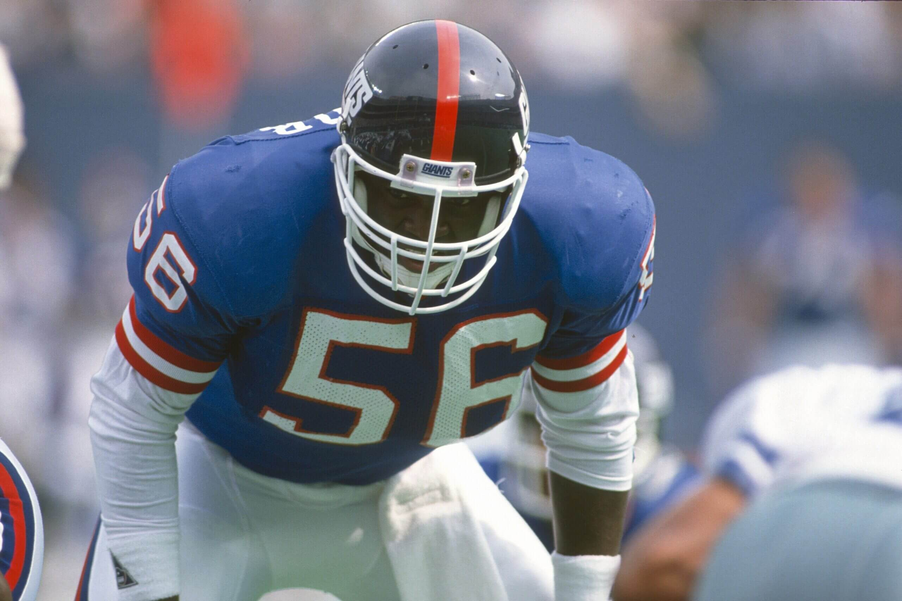
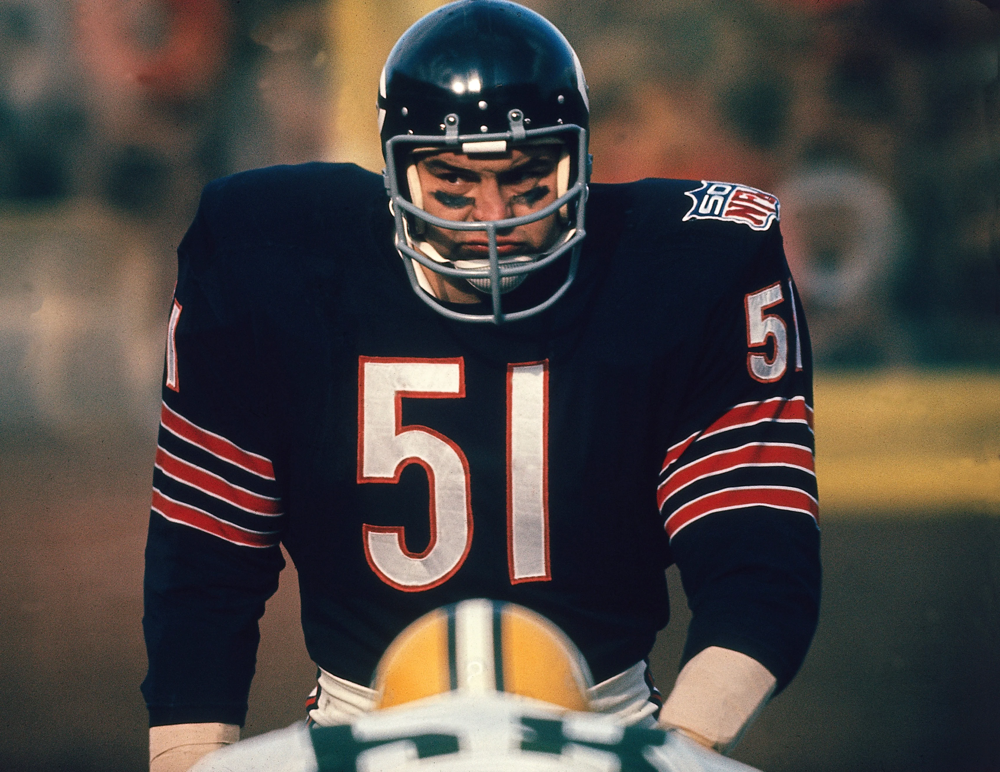

Ray Lewis

Lawrence Taylor was a revolutionary and exceptionally dominant Outside Linebacker for the New York Giants from 1981 to 1993. His unmatched speed, power, and ferocity as a pass rusher fundamentally changed NFL offenses, forcing teams to alter their blocking schemes to contain him. He had one of the most decorated defensive careers in history, including winning the NFL MVP award in 1986 (one of only two defensive players ever to do so), being named the NFL Defensive Player of the Year three times, and winning two Super Bowls (XXI and XXV). He was selected to 10 Pro Bowls, earned 8 First-team All-Pro selections, finished his career with 132.5 official sacks, and was inducted into the Pro Football Hall of Fame in 1999.
Lawrence Taylor

Dick Butkus, who played for the Chicago Bears from 1965 to 1973 as a Middle Linebacker, is remembered as one of the most ferocious and feared tacklers in NFL history, earning him the nickname "The Enforcer." He was exceptionally skilled at forcing turnovers, recording 22 career interceptions and setting a then-record of 27 recovered fumbles upon his retirement. His exceptional nine-year career included 8 Pro Bowl selections, 5 First-team All-Pro selections, and 2 NFL Defensive Player of the Year awards (1969, 1970). Butkus was named to the NFL's All-Decade Teams for the 1960s and 1970s and was inducted into the Pro Football Hall of Fame in 1979. His enduring legacy is honored annually by the Butkus Award, given to the top linebacker in college and the NFL.